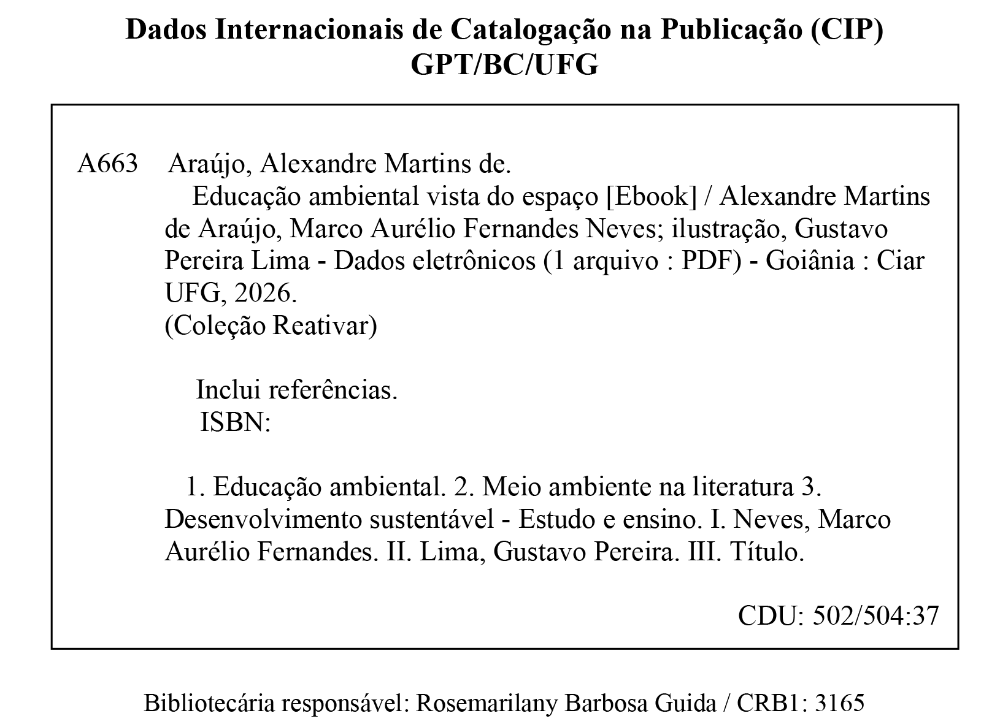

UNIVERSIDADE FEDERAL DE GOIÁS
REITORA
Sandramara Matias Chaves
VICE-REITORA
Camila Cardoso Caixeta
COLEÇÃO REATIVAR
AUTORES
Alexandre Martins de Araújo
Marco Aurélio Fernandes Neves
ILUSTRAÇÃO
Gustavo Pereira Lima
CONSELHO EDITORIAL
Carlos Abs da Cruz Bianchi • Faculdade de Letras/UFG
Carlos Rodrigues Brandão • Unicamp
Elias Nazareno • Faculdade de História/UFG
George Leonardo Seabra Coelho • UFTO
Gislene Auxiliadora Ferreira • Escola de Agronomia/UFG
Heloísa Selma Fernandes Capel • Faculdade de História/UFG
José Augusto Pádua • UFRJ
Márcio D’Olne Campos • Unicamp
Olga Rosa Cabrera Garcia • Assessora da FAPESP
Sandro Dutra e Silva • UEG
Sônia Maria de Magalhães • Faculdade de História/UFG
CIAR
DIREÇÃO
Janice Lopes
VICE-DIREÇÃO e COORD. ADMINISTRATIVA E FINANCEIRA
Silvia Figueiredo
COORDENAÇÃO PEDAGÓGICA E GESTÃO MOODLE
Janice Lopes
COORDENAÇÃO TECNOLÓGICA
Amilton Araújo
COORDENAÇÃO DE COMUNICAÇÃO
Raniê Solarevisky de Jesus
COORDENAÇÃO DE PROJETOS EDUCACIONAIS E PUBLICAÇÃO
Ana Bandeira
COORDENAÇÃO DE INOVAÇÃO E INTERFACE
Victor Hugo César Godoi
DIREÇÃO DE ARTE
Renato Galhardo
REVISÃO LINGUÍSTICA
Adelaide Lima
DESENVOLVIMENTO
Laryssa Tavares
EDITORAÇÃO
Victor Frazão
CIAR UFG
Goiânia, 2026

A Rede REATIVAR FH/UFG é parceira e integrante da ReneDH - Rede Nacional de Evidências em Direitos Humanos, do Ministério dos Direitos Humanos e da Cidadania – MDHC.
E-BOOK